直达末路
本文中一部分内容根据作者在社团微信公众号中所撰稿件进行修改，另有一部分内容根据作者所录制的视频进行删减。
中华人民共和国铁路运输较大规模的提速自1997年以来已进行了6次。1997年4月1日，中国铁路实施第一次大提速，对京广、京沪、京哈三大干线的行驶速度进行了全面提升；铁道部以沈阳、北京、上海、广州、武汉等核心城市为中心开行了最高时速达140公里、平均旅行时速90公里的40对快速列车和64列夕发朝至列车，全国旅客列车平均旅行时速提升到54.9公里。1998年10月1日，中国铁路第二次大提速后直通快速旅客列车在京广、京沪、京哈三大干线的提速区段最高时速可达到140公里至160公里，在非提速区段的时速达到120公里；夕发朝至列车增加到116趟。广深线采用新时速摆式列车最高时速达到200公里；全路旅客列车平均时速达到55.16公里。2000年10月21日，中国铁路围绕“新亚欧大陆桥”陇海线、兰新线、京九线和浙赣线展开了第三次大提速；列车的等级和车次在这一次提速中得到了重新分类和调整。全国铁路开始实行联网售票，400多个较大车站可办理相互异地售票业务。全国列车平均旅行时速提升到了60.3公里。2001年10月21日，中国铁路实施第四次大提速和新的列车运行图。通过对全国较大城市和大部分地区全面提速和对武昌至成都（汉丹线、襄渝线、达成线）、京广线南段、京九线、浙赣线、沪杭线和哈大线进行进一步提速，全国列车平均旅行时速提升到61.6公里。
2004年4月18日，中国铁路实施第五次大提速，开行了19对直达特快列车，主要范围是京沪、京哈等铁路干线，其中涉及上海铁路局的有11趟，包括5趟京沪直达列车。列车运行速度得到明显提高——过去的特快列车从北京到上海运行时间在14个小时左右，而新的直达特快列车的运行时间仅11小时58分。部分列车时速更达到200公里。全国列车平均旅行时速在这次提速后提升到65.7公里。随后在2007年又围绕各干线通过开行动车组完成了最后一次大提速；铁道部的官员对外界宣称自此之后将不再对既有线进行提速。
铁道部官员对本社记者说，四月十八日中国铁路将实施第六次大提速。这次提速旅客列车时速可达二百至二百五十公里，这已达到国际铁路在既有线提速改造的目标值。铁路将终结在既有线上再提速。这位官员表示，铁路提速一直是世界各国铁路共同追求的长期目标，今后中国铁路将着眼于建设高速客运专线，使其最高速度达到三百五十公里。
直达特快列车最早主要安排在客流较大的城市始发和终到，实现大城市间旅客快捷运输，但为了确保其直达、特快，其它不少列车在未正点运行的情况下要为它让行，晚点、误点更多的情况时有发生，有人认为直达特快客车挤占了其它中途地区铁路运行的空间，相对侵占了广大其它地区享有国有铁路资源的权益，造成不利的社会影响。而随着中国高速铁路的不断兴建，京沪之间的直达特快列车于2009年正式退出历史舞台，以两京（北京—南京）为首的直达特快列车也改为动车组，经京沪线运行的直达特快列车仅剩往来北京至扬州、南通、杭州等地。2014年12月10日调图后，中国铁路使用25T型客车的特快列车全部升级为直达特快列车，但这些列车运行途中仍有不少经停车站，因此目前直达特快列车的定义演变为“最高运行时速为160千米/小时的普速旅客列车”或“准高速列车”。2024年1月10日季度调图后，大量长编组第三代CR200J上线运营，取代各路局重要直达特快和特快列车；至此，2004年开行的第一批19列直达特快全部“升级”为动力集中式动车组列车。
因此，与其说“直达特快依然存在”，不如说“真正的直达特快确已经逝去了”。
由于家在上海铁路局境内，而上局又素以“动车组列车数量多、高速铁路线路开通早”闻名全国，自2014年之后我便没有再坐过动车组以外的列车——最后一次乘坐还是进藏时的T164/5次列车，现在也因为使用25T型客运车厢升级为“Z164/5次”了。作为一个时代的终末，自然是不能不为这些最后的真直达特快送行的；但因为1月上旬临近期末考试，加之财力不足，只能选择一些近而且合理的作为自己直达特快的开端和结尾。元旦是我最后的寄托；而那天南下的Z1次列车（北京西—长沙）又恰好是由毛泽东号（HXD3D-1893）牵引的。于是我本想去长沙一去；但仔细规划后发觉时间太过仓促，于是只能抱憾。忽而我想起我的发小在北京就读大学，于是便询问他是否有空，与我在北京游玩一个白天。他欣然给予了积极的答复；于是我更改计划——在12月31日晚乘Z44新年第一天到北京西，然后再在元旦的晚上乘Z19回西安。这两列直达特快都有高级软卧车厢，但我的钱包显然不会让我过如此奢侈的生活；而作为第一批直达特快的Z19更是全列卧铺。思来想去，我在Z44上选择了硬座车票，回程途中则可以在高级软卧车厢得到优质的休息。跟宿舍的人简单交代了去向和出行方式后，他们自然是不懂高级软卧的快乐和含金量的；因此也不细究，傍晚出门去了。
Z44（西安→北京西，硬座）
到西安站的时候太阳还没有落，因此在车站附近吃了一顿魏家凉皮。思来想去觉得还是应该给我在北京的朋友带去一些小小的“西安震撼”，于是在车站附近的商店里买了几瓶冰峰牌橙味汽水，心想如果他觉得好喝之后可以给他多带一些。随后便去南广场东侧的一处停车场观赏往来的车次。到了日暮时分，身边渐渐多了些人；甚至有一位带着女朋友来拍车的男士；随后又来了一对母子，孩子似乎是来看新一代动集的，对这昵称为“AD钙奶”的机型非常激动。
又过了一小段时间，Z94次列车（西安—上海）离开西安站。这趟列车虽然不是最初的十九对直达特快中的一个，但它在1月10日之后依然无法逃脱升级的命运。那位男士误以为年终的发车铃就是直达特快列车们的末日的信号；于是此时跟他的女朋友盛情介绍说“你明天就看不到它了”。我自然不会打扰这位男士；后来他的结果如何我也不得而知了。不过对于工作族和学生来说这个元旦应该是调图前最后的假期，因此很有可能今天在我身边的这些人士都是最后一次目击这些直特了。
又过了一段时间，和谐3D型0047号电力机车拖着一台第三代动集进西安站。这趟动集是从所里拉来的；在稍晚些时候它会向陕北方向出“红眼城际”任务。
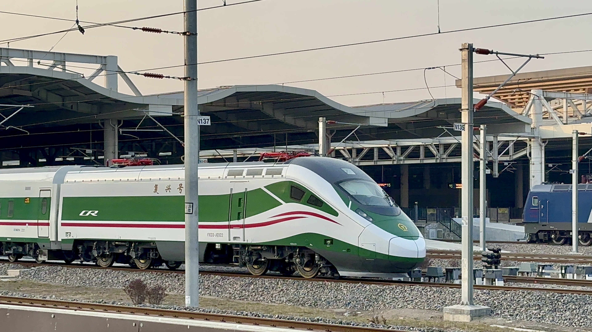
由于正值冬天，天色变暗得很快，便没有继续鉴赏的必要了。于是径直走向车站候车室。改造之后的西安站非常大；随着扶梯上楼就能看到正在候车的列车表单。西安站晚间出发的列车除了一部分管内城际之外就是长途列车了；如今出现在大屏上的Z字头有不少熟悉的面孔很快就要永远离开我们，不由得使人感慨时代的进变。


很快大屏上就滚动到了我所要乘坐的Z44次列车。按照指引，走到3B检票口等待检票；发现了同样在这个检票口检票的Z88次列车的乘客们。

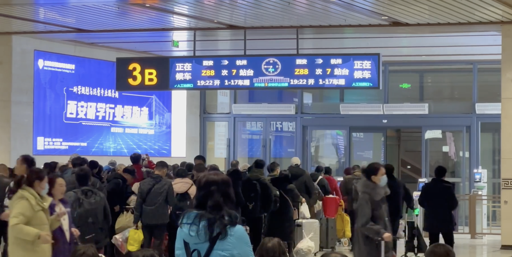
此时Z20次列车已经开始检票。Z44比Z20次列车的开点要晚大约1个小时出头，加之中间停靠的站点比后者还多出1个洛阳，因此到达时间自然也就没有Z20早。不过Z20的到达时间也不利于我的朋友来接车——难得的假期自然不能被不能睡懒觉给毁了。又过了一段时间，Z88检票结束之后Z44便出现在了3B检票口的待检大屏上。
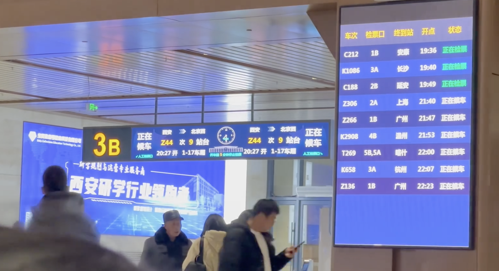
很快Z44开始检票了；但不知道什么缘故我面前的闸机比身边其他的闸机设定的放行时间晚了几秒。因为是假期乘坐这趟车的旅客并不少；在站台上有大学生行头的乘客问车厢门口的车务“加2车”的位置，因此看来这趟车为了元旦假期紧急加编了至少两节车厢。
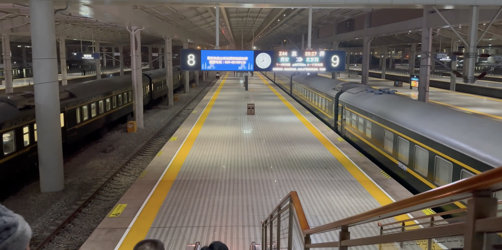
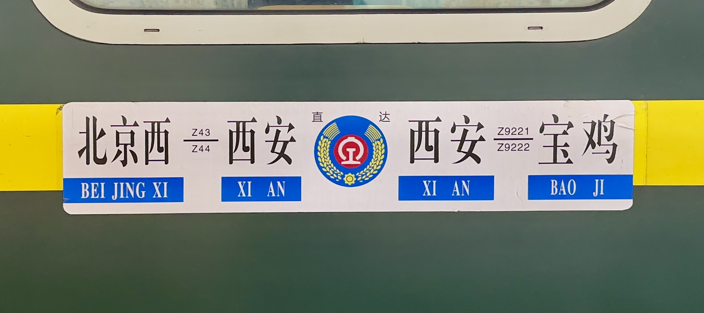
由于财力原因这次只购买了硬座车票。但走进车厢时比我的想象好不少——车厢的烟味没有那么重，且灯光比25K通亮很多；座位软度适中，与高速铁路的二等（软）座差不多。列车很快发车；在大约经过渭南西站之后，列车长让我们靠窗的乘客把窗帘拉上。我以为硬座车厢也开始半夜熄灯模式了；但事实证明并不是这样——硬座车厢的灯光从发车开始一直到我下车都是开着的；不过这也确实不奇怪，毕竟我们比卧铺掏的钱少得多。跟我坐得比较近的乘客基本全部是大学生；相信很多人都是把夕发朝至的车厢当作廉价移动旅馆的。由于到洛阳之前硬座乘客并不多，因此很多乘客选择把3个硬座座位连当1个简易卧铺床位，直接躺卧其上。
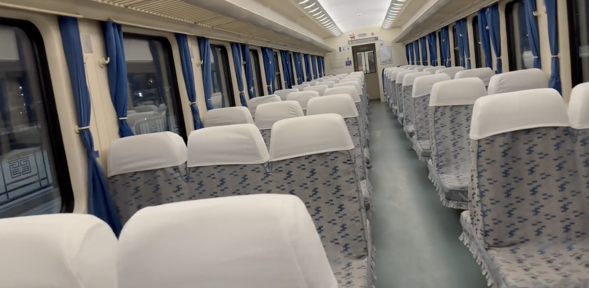
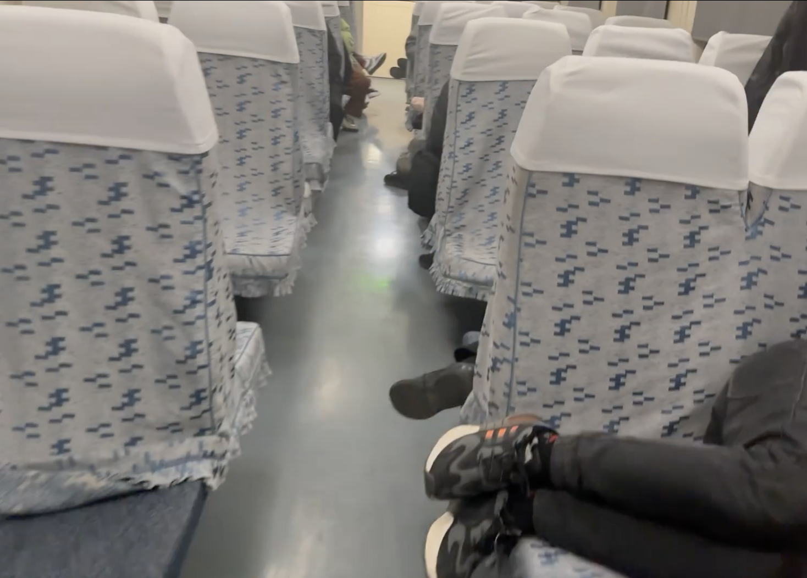
硬座车厢拥有非常卓越的到站唤醒服务，只是不能保证唤醒你时报的站是不是你要下车的站。列车距离到达洛阳站还有10分钟时，在列车过道巡视的列车员就已经开始大声呼喊了。
“洛阳，洛阳——下一站洛阳——”
因为到达时间是1点出头，我还是没有睡着的。又过了一会列车进站停靠之后，列车员对呼号词进行了一定的调整，但音量依然不变。
“洛阳，洛阳——洛阳站到了啊——洛阳——”
声音非常洪亮，有一种能够贯穿车厢的铁皮的架势。这一站上车的乘客非常多；整个硬座车厢顿时失去了所有的简易卧铺。
“来，有没有需要卧铺的，需要卧铺车厢的到加1车去办理了啊——车上还有少量的空余卧铺可以办理啊——需要的到加1车厢——”
在这呼号的余音中，列车在1:04驶出了洛阳站。这趟列车的过人之处在于它不停靠郑州站，直接通过郑州京广—陇海联络线由东行转为北上。列车在1:35度过了伊洛河，随后在2:33跨越了黄河景区站；自此列车正式走上京广铁路。
此时的我不知不觉便困了，于是便趴在桌台上小憩。但列车的震动和金属的传声让我实在难以入眠，于是还是站起，寻找给手机充电的位置。由于1车配备有列车长室，这个车厢是没有充电位置的；于是万般无奈之下再次前往其他车厢的（前进方向）尾端。不知不觉，列车在3:01、4:20和4:46分别跨越新乡、邯郸和邢台三站，最终在5:41到达石家庄站。
此时我们的列车停靠的站台对面就是Z2次（长沙—北京西）列车，但此时牵引这趟列车北上的并不是毛泽东号。按照计算，此时的毛泽东号正在北京铁路局丰台段维护；这一天晚上才会牵引Z1（北京西—长沙）南下。
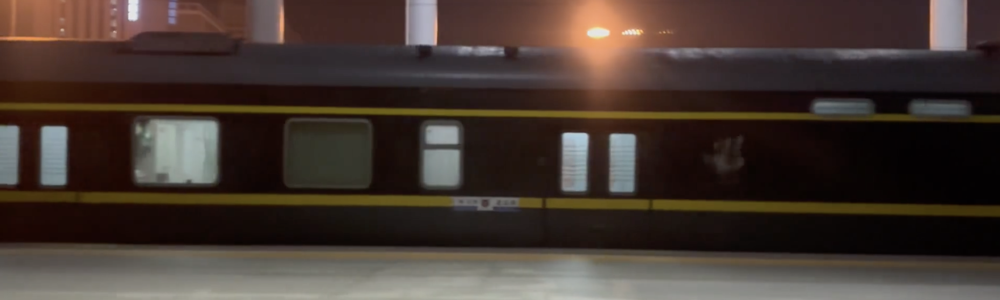
当我们5:52发车时，Z2已经先行一步直奔北京去了。列车随后在6:02和7:01分别通过柳辛庄站和保定站；此时天已经快亮了。北方的日出往往就是一瞬间的事；到7:09列车通过徐水站时天已经是一片鱼肚白。虽然华北在12月31日并没有降雪，但窗外尽是白色世界，可想而知外界的气温有多低。但车厢内因为暖气而并没有很明显的感觉。列车在离开石家庄后速度非常快，基本在到莲花桥之前都是保持着最大速度行驶的。
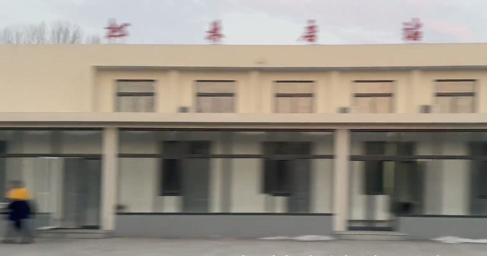
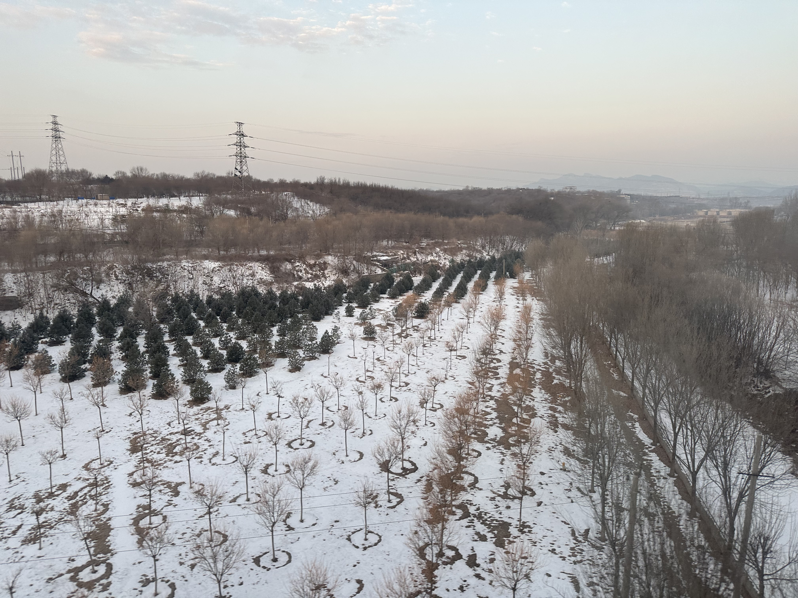
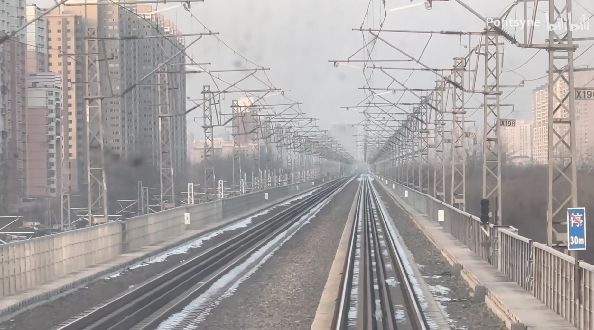
8:16时，列车通过莲花桥——此时这一单趟的旅程就基本告一段落了。此时日光也已经非常好了；在车尾简单待了一会后回到座位，收拾完东西之后便准备下车了。
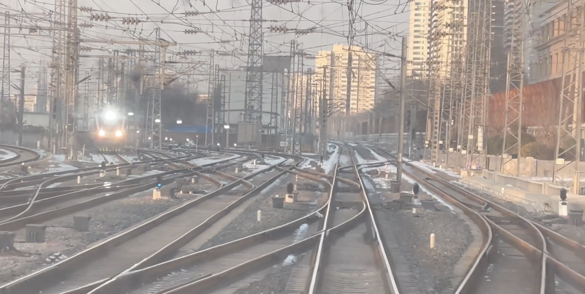
列车在8:20到达北京西站，比时刻表提前了2分钟。同一个站台的对面将会在5分钟后驶入由拉萨开来的Z22次列车；之前在石家庄遇到的Z2停靠在最近的另一个站台。这个时间段到达首都的都是各地各局的王牌直达特快，路上经停的车站都比较少；在不久之后这一盛景就将不复存在了，取而代之的是充满了“AD钙奶”的晨间京西。
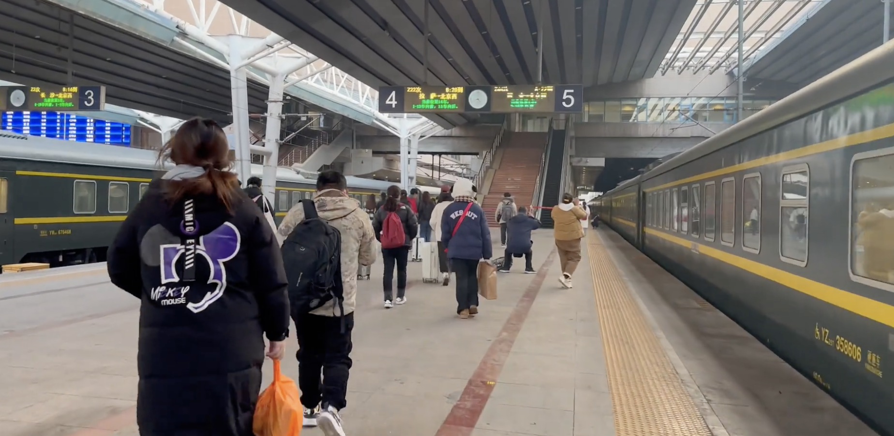

总的来说硬座长途的体验并不好；25T型客车的座椅硬度改良和车厢间的按钮式自动门也并不能挽救软件设施上的硬伤。硬座车厢作为乘客密度最大的车厢，性格的多样性导致了车厢在晚间可能的喧闹；至于列车到站时的呼号则更是令人困意全无，只留下晕胀的头脑。因此，吸取这次教训之后我应该不会随便持硬座车票进行特种兵出游了。万幸返程时会乘坐高级软卧车厢，为我假期之后的第一个工作日提供了足够的精力补给。
北京
朋友一听我是坐硬座来的顿时表示深切慰问与强烈同情。不过因为2012年夏天跟他来过一次北京，风景名胜基本已经逛完了；因此我们便只需要鉴赏一些2012年之后才有的新东西或者当时没去过的地方。
北京丰台站
因为北京西站到丰台有直达的地铁，因此顺水推舟先去为敬了。
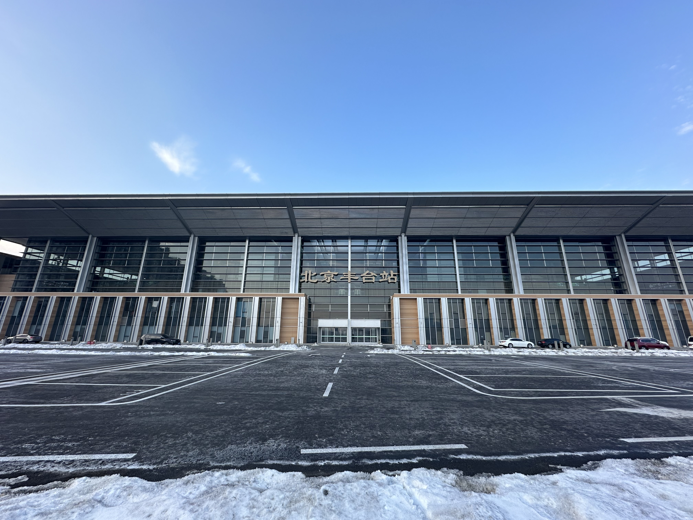
丰台站改造完后是中国大陆第一座双层站台式车站。按照构思，车站的地面层应该经行普速铁路列车，地上层则为高速铁路。我们因为没有购买从本站出发的车票自然是不能随意进入的，于是只是在周边绕了一圈。可以说车站虽然已经投入使用，但实际上离完全竣工还有一段距离——周边有不少基础设施现在仍处于施工状态。位于高台的停车场也被水马、栏杆等障碍物阻拦，因此只有步行能够前往。虽然停车场没有车，但是可以看出人工除雪的痕迹。此时远处传来一阵轰鸣；定睛一看是一台DF11G；其牵引的列车通过时刻表判断是Z601。
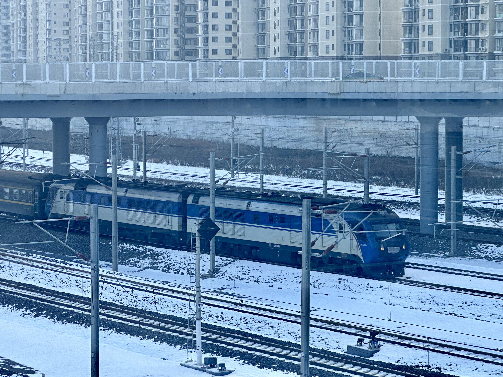
Z601/2次列车是由Z17/18次自2016年5月15日起套跑的直达特快列车，由北京站开往菏泽站。这趟来自哈尔滨的直达特快列车所持番号最早是2004年的前19列直特中唯一一趟隶属广州铁路局的，往返于北京西和长沙两站；此时始终于首都和哈尔滨的列车只有Z15/16次和T17/18次。前者作为“腾龙号”也是2004年的十九直特之一，因此也经常一票难求；基于此情况，哈尔滨铁路局自2009年底增开往返京哈、一站直达的Z1/2次列车。2016年Z17/18次和Z1/2次对换了开行番号，并在5月起更换为了国产25T车底，这才有了今天看到的Z17/18次列车。如今Z601/2次列车变成了全路极少有的常年配有公务高级软卧车厢的车次之一。
Z17/18次列车在1月10日调图后将会更改终点为齐齐哈尔；至于是否还会套跑Z601就不知道了。
北京地铁与其他
2012年之后就再没有来过北京；大学里三番五次有些竞赛对外宣称决赛在北京进行，但当我拼死进入决赛后又总是因为疫情原因转成线上。因此，我没乘坐北京地铁确也有些时日了。当时的我并没有觉得各种车厢之间有什么差异；现在再次乘坐，对电机的声音以及车厢的框架也有了不同的感受。
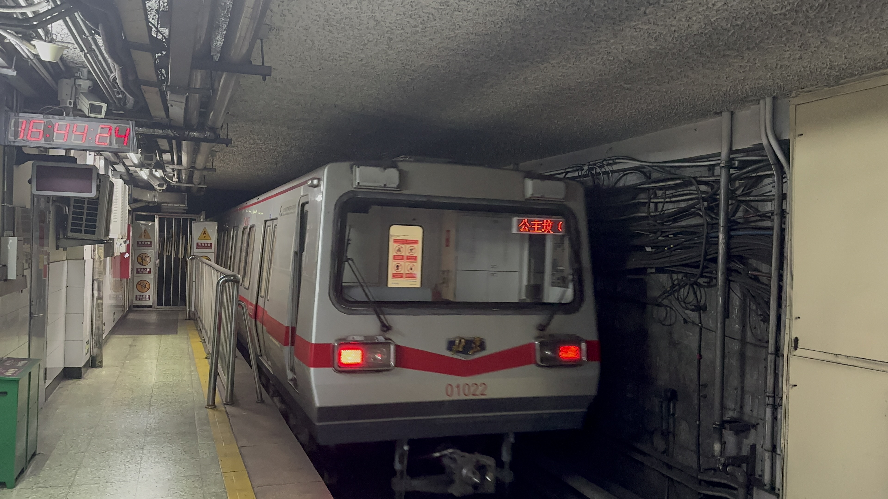
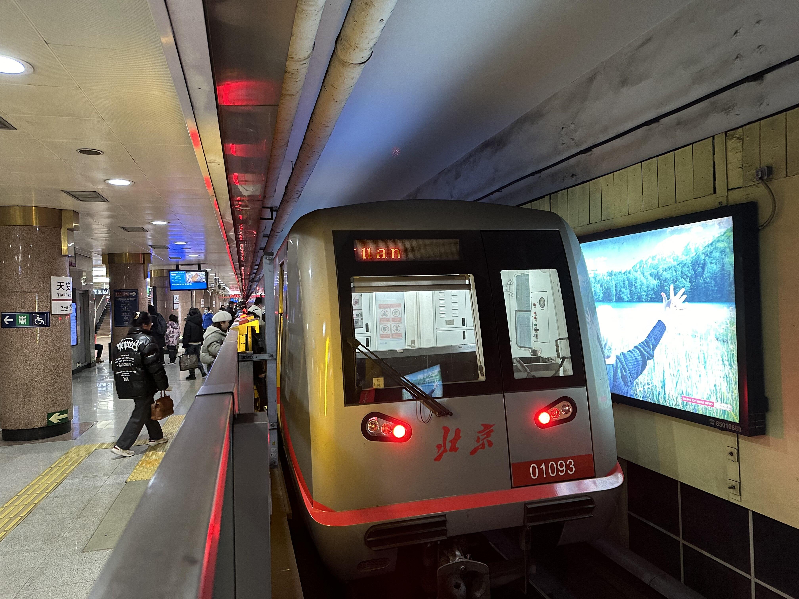
跟朋友中午在前门大街吃的东来顺；此时把从西安带来的冰峰给了他，他觉得不错。下次再去兴许可以多带些，让他放在宿舍喝。随后又就近去了天安门广场的外侧和国家大剧院；由于不知道流程所以没有预约进入天安门广场，因此只好放弃走进去。再之后又去了水立方和国家体育馆，虽然跟当年来的时候无聊的内在不尽相同，但票价依然不是很值。此时已经接近16点；于是准备去莲花桥等待毛泽东号的大驾了。
等待毛号
到莲花桥广为人知的拍摄点时才16:30出头；“毛泽东号”出勤牵引的Z1次列车17:59才离开北京西站。但此时这个机位已经全是长枪短炮了；可以看出很多人为了占据有利地形在寒天之下可能15点左右就到了。于是悄悄靠近，偷听他们的对话。
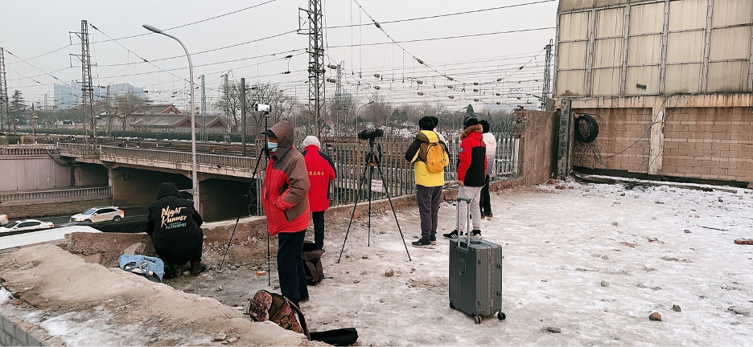
相比于摆好相机就能高枕无忧的本地人，我作为游客需要举着手机拍摄，在天寒地冻的日落时分显然比较被动。类似情况的不止我一个人；也有其他从内蒙古、东北等地区来抓住元旦假期的机会给毛号送行的人，没有准备三脚架。因为到的早所以我的拍摄位置非常靠前；身后也有些白发髯髯的老人在此驻足准备拍摄。随着手表的分针越发的向12点偏移，这里的聚集者也是越来越多了。终于，三束蓝光突然在丁达尔效应的帮助下与机车一同呼啸而来——今天莲花桥的唯一主角终于粉墨登场。
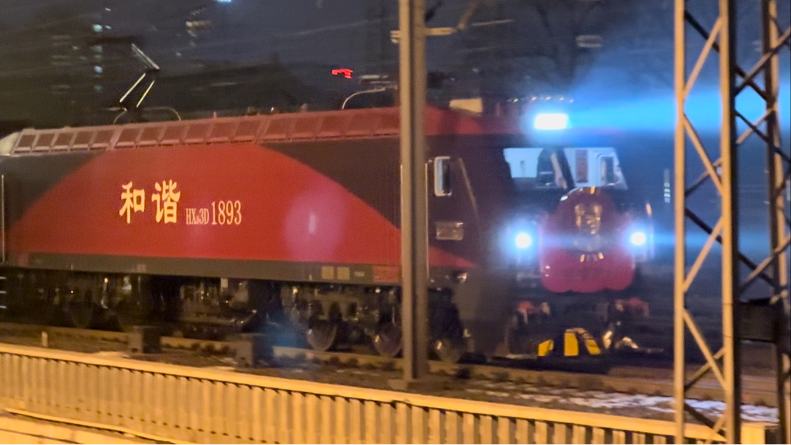
就像一出戏剧的揭幕，当毛泽东号出现在我们的视野中时，所有的人都无不放下口中的话题，凝望着自己的摄像机。这一出时长16节车厢的戏曲宣告终幕后，我跟我的朋友因为要去吃晚饭离开了，而台上的他们还意犹未尽，无声地站在那里了一小会。随后见暂时没有车发了，便也又恢复了交谈。
Z19（北京西→西安，高级软卧）
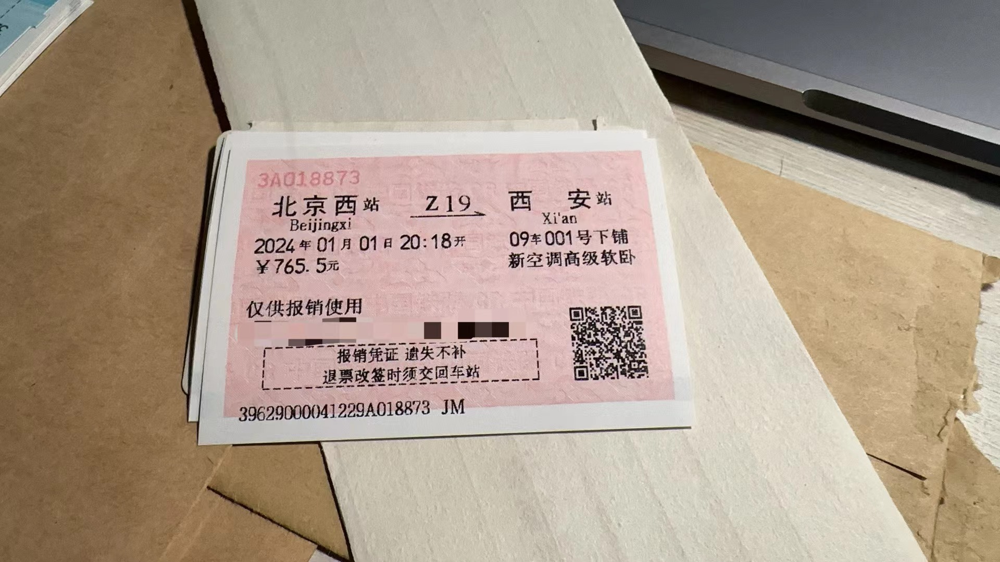
和朋友简单的道别并诚挚邀请他来西安之后，我从南进站口独自走进北京西站。和南京南站类似，从进站到走进候车大厅隔着一段扶梯；在慢慢向上后，一面巨幅时刻表电子屏赫然显露在我的眼前。
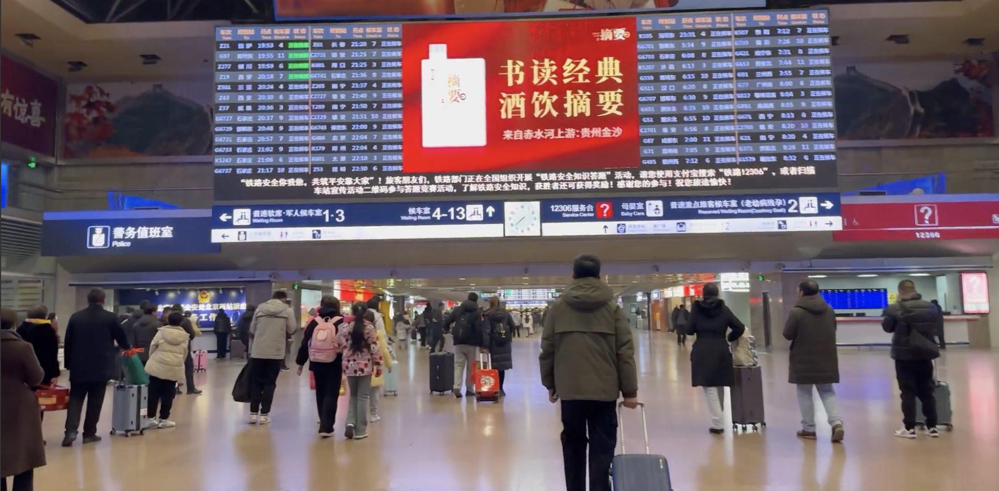
北京西站同时为普速列车和高速列车提供发到服务。为了配合日益增长的客流需要，2010年11月10日北京西站正式开始改造南广场；2012年9月22日，南广场改造完成。南厅配有软席候车室；按照常理我应该可以持高级软卧车票进入软席候车室候车，但我在软席候车室门前的电子显示屏上没有看到“Z19”。于是只能按照大屏上寻找检票口；这时我才发现，Z19已经进入检票状态了。于是匆忙向检票口跑去；
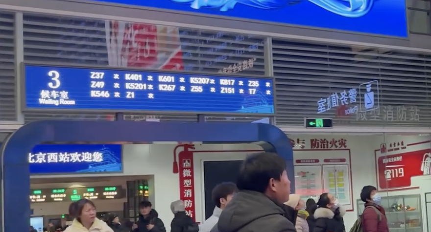
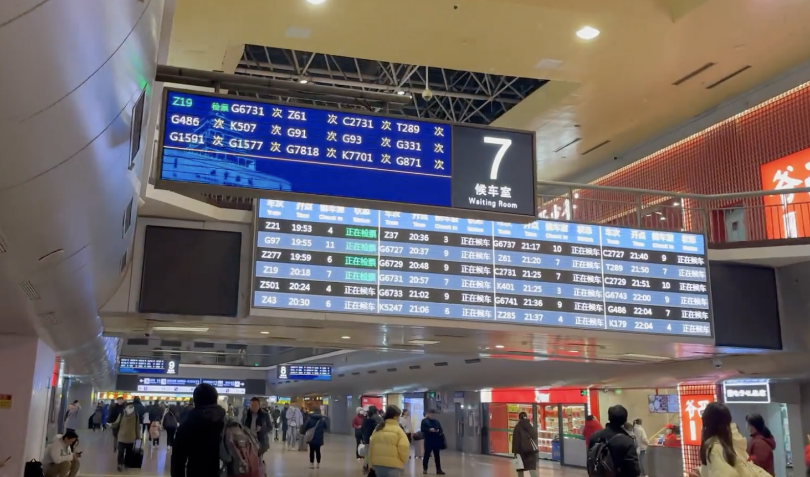
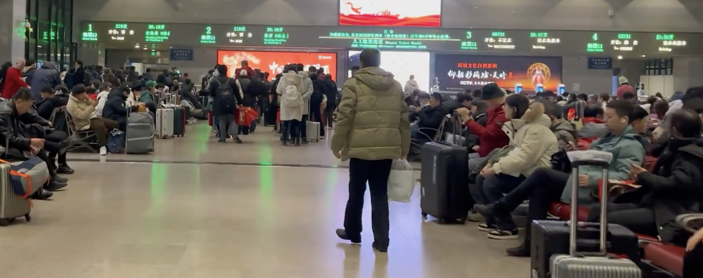
由于检票闸口开了很多，所以顺着队伍和人流从候车室一端移动到另一端并没有花太久。走到站台入口，走上扶梯，突然发现这一个站台左右两侧全是京西直特。
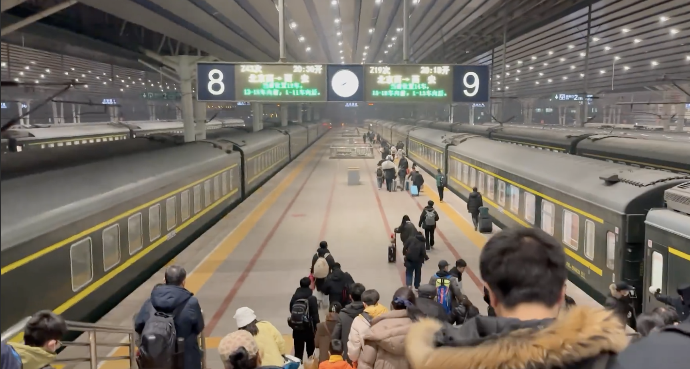
北京西站的9站台和10站台是2005年为了配合北京南站封站改造而扩建的。这次扩建除了9、10站台之外也新建了8号站台的雨棚，才有了现在这两趟车同台的场面。
这次乘坐的高级软卧席位集中于RW19T型554393号车厢。每列普通公民能够乘坐的直达特快列车最多也就只有1节RW19T车厢，而这每一节车厢中的包厢一共定员总数只有16，这其中还包括了乘务员室；而上车发车之后我发现也包厢没有全满，可见高级软卧票种的“质量之高，价格之贵”。我因为第一次登上高级软卧车厢一开始甚至没有进对房间，——虽然我是1号“客房”的车票，但检票的位置却是房间号码最大的那一头；我估测是为了方便检其他软卧车厢的车票方为之，——在3号“客房”真正的暂时主人来提醒我之后我才意识到。提醒我的是一个核心家庭标配的三口人；他们在20:17离开北京西之后的10个小时出头的时间内都将住在这同一个包厢。
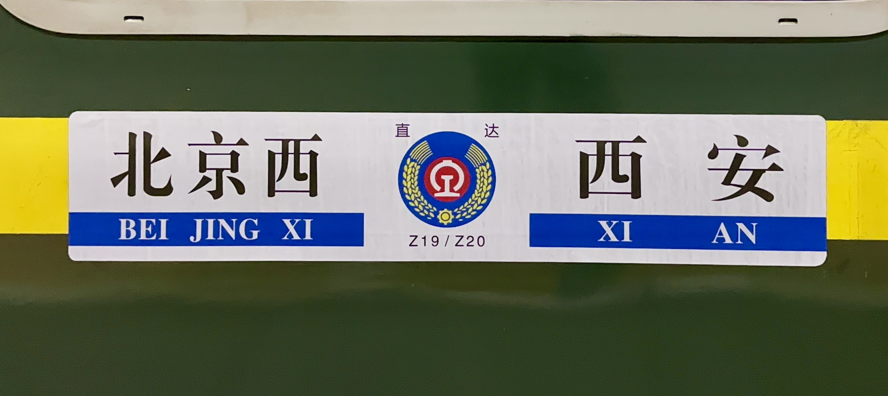
作为2004年最初的十九对直特列车之一，郑州铁路局西安分局（西安铁路局的前身）为了将这“高级软卧”的票种推广下去可谓煞费苦心——当年同样配置有高级软卧（“高包”）车厢的T41/2次列车在高包车厢的上座率一直不好。为此，西安分局在Z20次列车首发前通过分析调查制定了包括车站服务、营销宣传、售票组织和列车乘务等方面在内的一系列更新方案，以期全面提高Z20次列车的服务质量，促进旅客选乘此列车。终于功夫不负有心人，截至同年6月底，该趟列车票款收入3278.7万元人民币，总盈利1162.2万元人民币，上座率达93.3％，往返客票利用率始终稳居全国直达列车前列；在4月17日至6月10日，往返客票利用率排名为全路第一。昔日的辉煌如今随着高速铁路的普及自然也已不再——如今的高软价格比高速铁路二等座的价格贵出约100元左右，旅客自然更倾向于选择更快更便宜的出行方式。
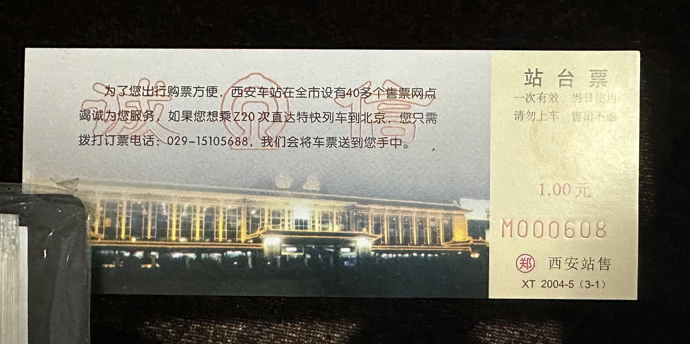
我的客房在发车的时候依然没有第二个人；可能是12306为我这种独身出游者进行的安排。我坐下一会之后，传来一阵敲门声——房间的隔离门隔音效果非常不错，甚至到了在比硬座车厢轰鸣的引擎声安静非常多的包间内敲门声都很难听见的程度。我打开门，门的另一头是一位乘务人员。
这位工作人员先是对自己的职责进行了介绍。她是专门负责高级软卧车厢的乘务员；有什么需求可以去乘务员室找他。
“可以按包厢内的求助铃么？”我在进包厢时看见了它，因此还没有等熟悉包厢内饰便发问。
“那个现在用不了了。”
作为一个并不喜欢找铁路麻烦的乘客，我自然无所谓要不要多走这几步路。因此我便也应了，之后他给我发了些卫生用品，随后就离开了。我也就把房门拉上，仔细研究起房间的内部构造。
每一个包厢都是由一个分上下铺的床位、一个沙发、一个和软卧车厢差不多的桌台和一个独立卫生间构成的；沙发的背后有可以摆放衣物的衣架，桌台上放有一个热水壶，下方设有220伏220瓦交流电两眼和三眼插座各一个。沙发的软度介于硬和一坐就陷进去的极端中间，恰好符合我的需要。床头设有阅读灯，并且可以正常开关；卫生间内有控制卫生间灯光和排风扇的开关，墙上有一些贴纸作为装饰，并有杠杆式小型梳妆镜；除了欧式马桶之外另有一个洗手台。在新年的寒冷天气下，卫生间的暖色调让它显得比白光照射的就寝空间显得更有魅力。走出卫生间，房间门卫生间一侧设有空调风量控制电动按钮和求助铃，靠床的一侧除了供上铺乘客使用的脚蹬之外还有就寝区域灯光的开关。床尾有一个西安铁路局自己的广告牌，从旁边的“音量调节”旋钮来看应该以前是一台电视；床头桌旁的窗帘分透光纱帘和遮光板两层。总的来说这一个房间已经具备了一个酒店套房需要具备的所有功能；让我想起古人曾言“麻雀虽小五脏俱全”之论。不得不说这个高级软卧车厢比我想象的还要高级；它真正意义上诠释了什么叫做真正的“移动酒店”。
因为前一天几乎等于没睡，我很快便躺在床上睡着了。高级软卧车厢的减震做的非常不错，原本轮毂撞击造成的颠簸在床上的实际体验就不过是普通的摇晃而已。当然也有可能是我的心理作用——睡前的我本担心颠簸和噪声会让我这一晚也难寐。
一觉醒来，列车已经经过临潼了。此时传来敲门声；但我觉得还不至于到站，加之我可以假寐，于是我没有应。过了一会门被这位乘务员从外部打开；她告诉我列车快要到了。这种温和而又不大声的到站提醒显然比赴京时的硬座要好很多；我旋即告诉她我知道了，于是开始穿衣。列车最终提早了20分钟到达西安；对于中途完全不停车的列车而言这显然是很合理的事情。这一觉睡眠的质量非常高；也不知是困意还是独处于一个小“酒店”中带来的无防备所铸就。
很快就下了车，心中仍意犹未尽。走到出站扶梯豫备离开站台时蓦然回首，突然想起自己还没有拍下这让我无需担忧财产遭窃的功臣车厢，于是急忙转身回去。在1月10日之后，这节车厢何去何从自然也不得而知；而对于绝非游手好闲之徒的我来说这可能是最后一次坐上去的机会了。
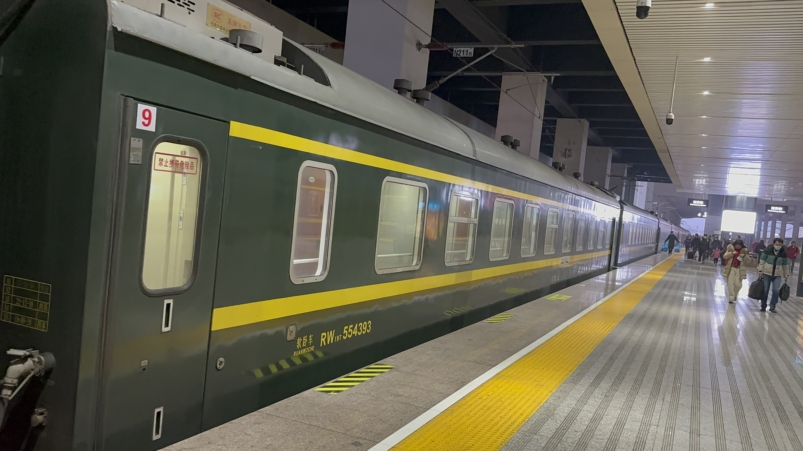
因为当天下午就还要上《习近平新时代中国特色社会主义理论体系》这一门课，所以很快就上了回程的地铁。本来想要乘Z1去长沙的我曾经以此理由向他请假但终于没有获得批准——今天会是这个学期这门课的最后一节。不论怎样，这次赴京的直特送别之旅就告一段落了。
写在最后：时间、时机、时代
不论怎样，直达特快的时代确已经结束了。这趟高级软卧的车票下铺也不到800元，而后续更换为动车组后与价格最高的一等卧铺价格如无折扣只会比这个数字高得多，而其实际上也应只能达到以前软卧的水准。另一方面，这种涨价方式引起的抗议显然已经超出了铁路爱好者的圈子；下面会对此次直特换动集谈一些我的理解和看法。
时间：备受公众诟病的主要诱因
作为既有线动集动车组，列车虽更换了车次开头字母，但并不会变更其经行普速列车的事实；加之动力集中式动车组列车最大（设计）时速限制在160公里，仅较中国铁路现全路流行的普速列车提升了20至40公里，因此替代直达特快列车的列车不会对原先的直特所执时刻表造成太多明显的变动。
我在2023年上半年曾乘坐8355次列车前往阎良处理一些个人事项；车上有很多人是错过了这次列车开始检票前10分钟左右已经从西安站驶出的C232次城际列车的前往阎良、富平和庄里三站的乘客。作为通勤列车自然也不可避免地出现一些铁路工作人员以乘客的身份同行；后者在跟其他误车的乘客闲聊时，终于让这些乘客发现了所谓“绿巨人”（一部分媒体对第一代和第二代复兴号CR200J动力集中型动车组列车的别称）本质并非高铁的事实。 交谈发现，很多乘客误以为西安铁路局管内、往返于陕西省境内各地区的“C字头”城际列车与京津、宁启等城际铁路上曾使用的和谐号动车组类似，是“高速客运铁路”的一部分。虽然这些曾经使用和谐号动车组的“C字头”如今也已经转为使用复兴号动力集中式动车组列车，但同既有老线相比，这些新的线路的设计运行速度快得多；至于陕西省境内目前仍在使用并办理客运业务的铁路建成时间几乎都不在本世纪之内，进而导致与“升级”前的速度对比更容易、感受更明显。其他地区的情况也与陕西省类似。一部分铁路局在对普速列车动集化之后大幅升价，引发不少乘客的不满，也有一部分铁路爱好者直呼其抢钱。在2023年的一次法定小长假期间有乘客购票时发现某一班首都出发的动集列车卧铺车厢票价竟高达数千元，甚至是同起讫站高速铁路的商务座票价的两倍；铁路局在后续回应称其为“正常溢价”，进一步引发争议。
“什么‘绿巨人’，都是骗人的。坑钱的那都。”一名已经退休的铁路职工在8355次列车上与身边的乘客攀谈时聊到兴起，感慨万千而愤然道。
时机：春运与技术的权衡
本次调图恰逢“春运”开始之前。由于“乘坐体验升级”带来的不可避免的“票价档位升级”，外出务工人员的回家之路较往年会否变得更加昂贵成为了一大悬念。毫无疑问春运期间会有大批临时增开的客运列车，但铁路列车毕竟只能在铁轨上跑，在保证安全行车间隔的情况下每天开行的列车数量自然有限，不排除有务工人员因这些临客售罄而不得不选择动集的情况。
就目前12306在售的车票来看，往年务工人员更青睐的硬座车票在今年动集化后折扣幅度是最大的；近日广为网络传颂的“眉山至北京硬座车票2折只需四十余元”一事自然不在话下。但动集车票在折扣过后票价依然令人望而生畏，更不用说这种大刀阔斧的折扣并不是发生在这些动集上；笔者也因票价考量在去年曾估测本年度第一次调图在春运之后才会进行，但事实恰与之相反。
虽然经过三代动力集中式动车组列车的生产尝试，复兴号CR200J型列车的技术和细节上已经有显著进步，如先前两代作为深受铁路爱好者谴责的理由的“涂装丑陋且因涂料配比难控制而易掉色”“座铺车厢无法调换座椅朝向”等问题均已得到针对性解决，但量产后在春运之前即告入网显然有些操之过急。固然，2019年起中国铁路由国务院主管转为国有企业后资金成为了举足轻重的考虑方面，但过分的急切让此次调图招徕了非常大的争议；这些争议或来自铁路爱好者，或来自一般乘客，抑或是因卧铺无法享受学生优惠的在读。春运期间12306购票动集各铺位都有7折上下的优惠，使其与直达特快列车时期的票价相差不大；至于后续会否出现“温水煮青蛙”的再现、逐步降低折扣幅度，进而使票价直线上升，则仍有待观察。
时代：旧的问题不去，新的问题不来
直达特快列车是2004年中国铁路第五次大提速的最大特征；它们的消逝无疑是高速铁路普及化的最大牺牲品。2014年，中国铁路正式展开将各色列车厂修时统一涂装为墨绿色的行动，在爱好者间也简称为“刷绿”；自此，所谓的“原色时代”宣告终结，列车的特色由“外在”的涂装转为了“内在”的装饰与服务风格。
此次调图将一大批直达特快列车更换为动集动车组，意味着车厢的特色由有变为了没有。这些车次号不再是固定的几个车组，而是与高铁类似的简简单单的电子方向指示牌上的数百盏亮灯，每天都可以由不同的长编组担当。当然，相较于先前的普快列车，动集动车组列车有效解决了长期存在的车厢内烟味浓重、噪声较响的问题，同时将监控摄像头放置得更加隐蔽，进而确对乘客的实际体验和旅途安全度有了提升。然而终于是缺少了以前车厢内弥漫的社交的空气，也缺少了原先直特始发各区域的地方特色。这些问题后续如何改善，也是一大新的挑战。
2004年4月18日，中国铁路进行全面大提速后第一次开发出“直达特快列车”这一客运产品，以一站直达为特色，优质服务为优势。第一批直达特快列车一共开行了19对，其中包括“西北第一直特”Z19/20次列车。在4月17日这趟列车首次开行之前，郑州铁路局西安铁路分局曾针对同样往来于西安和北京的T43/4次列车高包车缺少市场的原因进行了非常细致的分析和调查，最终针对性制定了营销与宣传策略，使得Z19/20次分到了西京两地间民航领域的一杯羹，并且车票实际使用率稳居首批各直达特快列车之首。如今铁路票价的顺势上浮和民航票价的飞速跳水形成了鲜明的对比；“打江山容易守江山难”，在出行选择日趋多样化的今天如何守住自己现有的市场也成为了一大挑战。
后续
1月3日，我在学校的同学帮我从Z85/8次列车的工作人员那里乞求到了他们的方向牌。
工作人员听说了这位同学的来意后非常感谢一路以来的支持；兴许也为之后这趟车将不复存在而感伤，他说出了一句我从未想过的话：
“从车厢上撕下来怎么行，又撕不干净。”
随后从办公室拿来两张还未张贴的方向牌。这两张方向牌一张由这位同学留存，另一张赠予了我。我对这位列车人员和同学都非常感激——这张方向牌至少证明了我曾经历过这个时代，这个打磨大站正线之风呼啸而过的直特时代。为了为这个时代守住最后的一丝余念，我们也曾疯狂过，在自己的脑海中留下记忆深刻的一页。
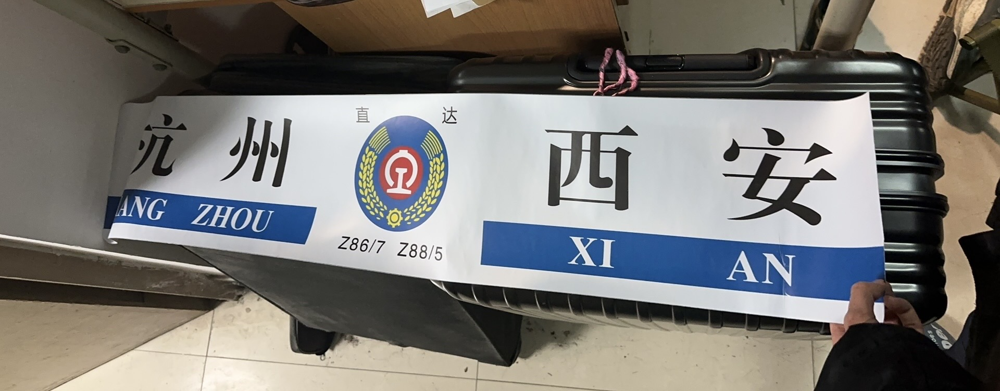
想必1月8日在汉口站留影最后的Z37次列车的武汉同仁们也有这样的想法罢！也或许正是按下快门的那一瞬间，人们才不得不承认这个时代连同火汽四溅的西北塞外一起逐渐离我们远去了，也因而不得不尝试适应这个突如其来的新的时代。
一十子夜，直达末路。
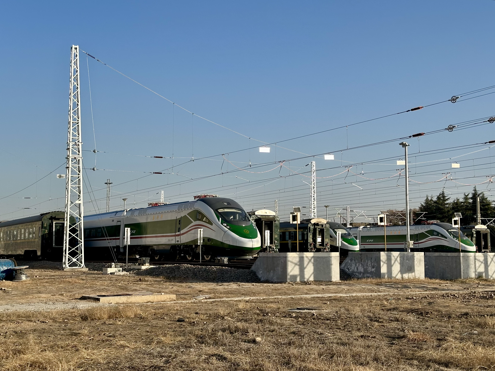